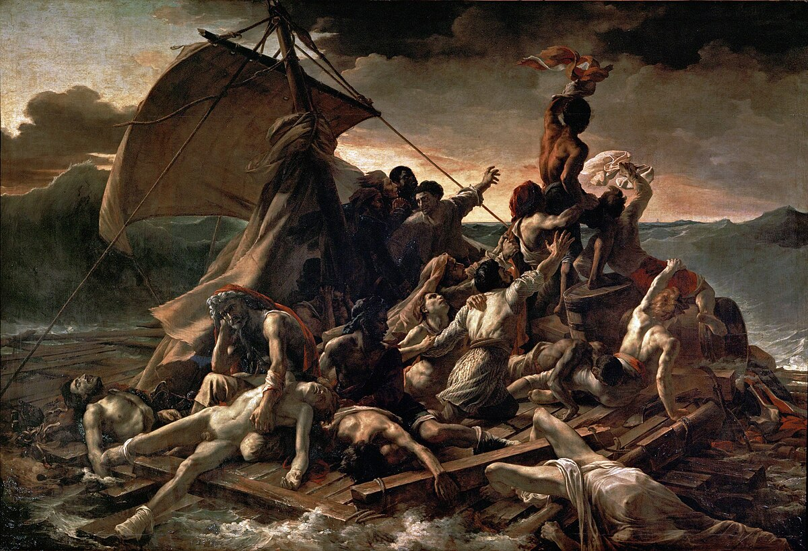

Meesterwerk: De Vrijheid leidt het Volk
Eugène Delacroix, 1830
KUNSTSTROMINGEN VAN DE MIDDEEUWEN TOT NU
Deel I: Van de Oudheid tot het Moderne
---
Beweging: Romanticisme (1780-1850)
Tijdsgeest Context
Politiek PerspectiefDe Romantiek ontstond in een periode van tumultueuze politieke veranderingen die de Europese orde fundamenteel zou transformeren. De Franse Revolutie (1789) brak met de ancien régime en introduceerde radicale idealen van vrijheid, gelijkheid en broederschap, maar deze idealistische belofte mondde uit in het bloedige Terreur-regime van Robespierre (1793-1794) en vervolgens in de imperiale ambities van Napoleon Bonaparte. Deze teleurstelling over de discrepantie tussen revolutie-idealisme en -realiteit voedde het romantische verlangen naar een meer organieke, emotionele benadering van samenleving en politiek – een directe reactie tegen de verlichte rationaliteit die aan de revolutie voorafging. Deze politieke context vertaalde zich direct in de kunst: "De Aanvallende Jager" (Géricault, 1812) vangt nog de Napoleontische glorie op haar hoogtepunt, met de dynamische diagonale compositie en het levendige kleurenpalet (felrood uniform, gouden paardentinten) die de heroïek van het keizerrijk verheerlijken. Het schilderij toont de cavalerist in volle galop, zijn paard met alle vier benen van de grond – een visuele metafoor voor de onstuitbare Napoleontische expansie. De dikke, expressieve penseelstreken en het dramatische chiaroscuro suggereren beweging en kracht, perfect passend bij de politieke sfeer van keizerlijke triomf.
De Napoleontische bezetting van Spanje (1808-1814) bracht echter de duistere kant van deze politieke ambities aan het licht. "De Derde Mei 1808" (Goya, 1814) toont de executie van Spaanse burgers door Franse soldaten, en transformeert politieke geschiedenis tot universele menselijke tragedie. Goya's compositie is revolutionair: het felle licht van de lantaarn verlicht de slachtoffers in wit en geel, terwijl de beulen anonieme silhouetten blijven in donkerblauw en zwart. De centrale figuur met opgeheven handen – een christusachtig martelaarschap – en de schetsmatige, bijna ruwe penseelvoering intensiveren de emotionele impact. Dit werk introduceerde een nieuwe vorm van politieke kunst: niet de verheerlijking van overwinnaars, maar de getuigenis van slachtoffers. De diagonale opstelling van de executieploeg, de lichamen in de voorgrond, en het gebrek aan heroïek maken dit tot een visuele aanklacht tegen oorlogsgeweld.
Na de val van Napoleon in 1815 probeerde het Congres van Wenen de oude monarchieën te herstellen, maar de geest van revolutie kon niet meer teruggedraaid worden. De restauratie-periode (1815-1830) werd gekenmerkt door een spanning tussen conservatieve krachten en opkomende liberale en nationalistische bewegingen. In Frankrijk manifesteerde dit zich in de Julirevolutie van 1830, waarbij koning Karel X werd afgezet. "De Vrijheid leidt het Volk" (Delacroix, 1830) verbeeldt deze revolutie in al haar dynamiek. Delacroix gebruikte een levendig kleurenpalet van rood, wit en blauw (de Franse driekleur) als compositorisch centrum, omringd door de donkere rook van de barricades. De diagonale compositie – Vrijheid stormt over de doden heen, haar vlag wappert theatraal – en de losse, schetsmatige penseelvoering suggereren urgentie en spontaniteit. Verschillende sociale klassen (bourgeois met hoge hoed, arbeider met baret, jonge knaap) verenigen zich achter het revolutionaire ideaal, wat de romantische "Volksgeist" – de geest van het volk – visualiseert. Dit werk toont hoe politieke idealen direct de vorm en inhoud van de kunst beïnvloedden: de theatraliteit, de symboliek, en de emotionele intensiteit zijn allemaal politieke uitingen.
De politieke teleurstelling na de revoluties vond ook uitdrukking in werken van maatschappelijke kritiek. "Het Vlot van de Medusa" (Géricault, 1818-1819) is gebaseerd op een actueel schandaal: de schipbreuk van het fregat Medusa in 1816, waarbij 147 mensen achtergelaten werden op een vlot door de incompetentie van een door koninklijke gunst benoemde kapitein. Géricault transformeerde dit politieke schandaal tot een monumentaal schilderij (491 × 716 cm) dat de fragiliteit van de burgerlijke beschaving blootlegt. De donkere, aardse tinten (bruinen, roestkleuren, grijs zeewater) en de piramide-vormige compositie – van de dode man rechtsonder naar de wanhopig wijzende man bovenaan – creëren een visuele klaagzang. De zichtbare, expressieve penseelstreken en de onverbloemde weergave van lijden, waanzin en dood breken resoluut met het decoratieve Classicisme. Dit werk demonstreert hoe politieke kritiek de romantische kunst nieuwe thema's en vormen gaf: het banale, het gruwelijke, en het sociaal-rechtvaardige werden esthetische subjecten.
Na de val van Napoleon in 1815 trachtte het Congres van Wenen (1814-1815) onder leiding van de Oostenrijkse staatsman Klemens von Metternich de oude monarchieën te herstellen en een nieuwe Europese orde te creëren. De geallieerde mogendheden – Oostenrijk, Pruisen, Rusland en Groot-Brittannië – stelden een conservatief staatsbestel in dat de liberale en nationalistische aspiraties systematisch onderdrukte. De restauratie-periode (1815-1830) werd gekenmerkt door een fundamentele spanning tussen de gevestigde conservatieve krachten, die de traditionele monarchale legitimiteit en sociale hiërarchie wilden behouden, en opkomende liberale bewegingen die constitutionele garanties, persvrijheid en parlementaire vertegenwoordiging eisten. In Frankrijk manifesteerde dit zich in de Julirevolutie van 1830, waarbij koning Karel X werd afgezet. "De Vrijheid leidt het Volk" (Delacroix, 1830) verbeeldt deze revolutie in al haar dynamiek. Delacroix gebruikte een levendig kleurenpalet van rood, wit en blauw (de Franse driekleur) als compositorisch centrum, omringd door de donkere rook van de barricades. De diagonale compositie – Vrijheid stormt over de doden heen, haar vlag wappert theatraal – en de losse, schetsmatige penseelvoering suggereren urgentie en spontaniteit. Verschillende sociale klassen (bourgeois met hoge hoed, arbeider met baret, jonge knaap) verenigen zich achter het revolutionaire ideaal, wat de romantische "Volksgeist" – de geest van het volk – visualiseert. Dit werk toont hoe politieke idealen direct de vorm en inhoud van de kunst beïnvloedden: de theatraliteit, de symboliek, en de emotionele intensiteit zijn allemaal politieke uitingen.
De politieke teleurstelling na de revoluties vond ook uitdrukking in werken van maatschappelijke kritiek. "Het Vlot van de Medusa" (Géricault, 1818-1819) is gebaseerd op een actueel schandaal: de schipbreuk van het fregat Medusa in 1816, waarbij 147 mensen achtergelaten werden op een vlot door de incompetentie van een door koninklijke gunst benoemde kapitein. Géricault transformeerde dit politieke schandaal tot een monumentaal schilderij (491 × 716 cm) dat de fragiliteit van de burgerlijke beschaving blootlegt. De donkere, aardse tinten (bruinen, roestkleuren, grijs zeewater) en de piramide-vormige compositie – van de dode man rechtsonder naar de wanhopig wijzende man bovenaan – creëren een visuele klaagzang. De zichtbare, expressieve penseelstreken en de onverbloemde weergave van lijden, waanzin en dood breken resoluut met het decoratieve Classicisme. Dit werk demonstreert hoe politieke kritiek de romantische kunst nieuwe thema's en vormen gaf: het banale, het gruwelijke, en het sociaal-rechtvaardige werden esthetische subjecten.
De Romantiek viel samen met een periode van intense nationalistische bewegingen die de Europese kaart zouden transformeren. In Italië groeide het *Risorgimento* – de beweging voor nationale eenwording – met figuren als Giuseppe Mazzini, die in 1831 de geheime organisatie *Young Italy* oprichtte. In Duitsland manifesteerde het nationalisme zich in de Hambacher Fest (1832), een massale bijeenkomst van 30.000 mensen die eisten voor Duitse eenheid, persvrijheid en mensenrechten. De Griekse Onafhankelijkheidsoorlog (1821-1832) tegen het Ottomaanse Rijk vond brede steun onder Europese intellectuelen en kunstenaars, waaronder Lord Byron die zelf aan de strijd deelnam. Deze nationalistische aspiraties waren diep geworteld in de romantische concepten van de "Volksgeist" – de unieke geest van elk volk – en het verlangen naar culturele en politieke zelfexpressie, en vonden hun visuele equivalent in kunst die nationale helden, historische mythen en folkloristische tradities verheerlijkte.
Tegelijkertijd voltrok zich buiten Europa een revolutie van wereldhistorische betekenis: de Spaans-Amerikaanse onafhankelijkheidsoorlogen (1808-1833). Van Mexico tot Argentinië kwamen de koloniën in opstand tegen het Spaanse moederland, mede als gevolg van de politieke destabilisatie veroorzaakt door de Napoleontische bezetting van Spanje. Leiders als Simón Bolívar en José de San Martín bevrijdden grote delen van het continent en stichten nieuwe republieken gebaseerd op liberale grondwetten. Deze onafhankelijkheidsbewegingen werden geïnspireerd door de idealen van de Verlichting en de Franse Revolutie, en vonden intellectuele steun bij Europese liberalen die zagen in deze revoluties de verwezenlijking van hun eigen idealen. De Romantiek omarmde deze bevrijdingsstrijd als expressie van de universele menselijke drang naar vrijheid en zelfbeschikking.
De opkomst van het Europese imperialisme en kolonialisme bereikte een hoogtepunt tijdens de Romantiek. Groot-Brittannië consolideerde haar mondiale suprematie na de Napoleontische oorlogen en breidde haar koloniale rijk uit over Azië, Afrika en het Pacifische gebied. De oriëntalistische fascinatie die zo karakteristiek was voor de Romantiek – de interesse in het exotische, het "andere" – was onlosmakelijk verbonden met deze koloniale expansie. Schilders als Eugène Delacroix, die in 1832 Noord-Afrika bezocht, verwerkten hun indrukken van de "Oriënt" in werken die zowel esthetische bewondering als culturele dominantie uitdrukten. De romantische interesse in het "nobele wilde" en het "edle wilde" weerspiegelde zowel een oprechte fascinatie voor niet-westerse culturen als de koloniale ideologie die deze culturen als inferieur of primitief categoriseerde.
De sociale onrust die de eerste helft van de negentiende eeuw kenmerkte, bereikte haar climax in de Revoluties van 1848 – de zogenaamde "Lente van de Volkeren". Deze revolutionaire golf, die begon in Frankrijk en zich verspreidde over het Duitse Confederaat, de Oostenrijkse Keizerrijk, Italië en elders, verenigde liberalen, radicalen en arbeiders in hun eisen voor politieke hervormingen, nationale eenwording en sociale rechtvaardigheid. De revoluties werden gevoed door een combinatie van economische crisis – een mislukte aardappeloogst in 1845 en een daaropvolgende hongersnood – politieke onderdrukking en de groeiende ontevredenheid van een stedelijke arbeidersklasse die in armoede leefde te midden van de industriële revolutie. Hoewel de meeste revoluties uiteindelijk werden onderdrukt, betekenden ze het einde van de conservatieve orde die in Wenen was gevestigd en luidden ze een tijdperk in van bredere politieke participatie en sociale hervormingen. De romantische kunst, met haar nadruk op individuele expressie en emotionele intensiteit, bood een esthetisch kader waarmee kunstenaars konden reageren op deze sociale onrust – door het lijden van de armen te verheerlijken, de heldendom van de revolutionair te vieren, of de existentiële angst van een tijdperk in transitie uit te drukken.
De opkomst van de middenklasse – de *bourgeoisie* – was één van de meest transformerende sociale ontwikkelingen van de Romantiek. De industriële revolutie creëerde een nieuwe klasse van fabrikanten, handelaren en professionals die economische macht verwierven maar politiek gemarginaliseerd bleef onder de aristocratische orde. Liberalen als John Stuart Mill in Engeland en Benjamin Constant in Frankrijk ontwikkelden een politieke filosofie die de individuele vrijheid, constitutionele regering, vrije handel en beperkte staatsinterventie voorstond. Deze opkomst van het liberalisme was onlosmakelijk verbonden met de romantische nadruk op het individu, het geniale subject, en het recht op zelfexpressie – hoewel er ook spanningen bestonden tussen de liberale nadruk op rationele vooruitgang en de romantische voorkeur voor emotionele ervaring en organieke gemeenschapsvorming.
Vroege arbeidersbewegingen begonnen te organiseren tegen de uitbuiting van de industriële revolutie. De Canut-opstanden in Lyon (1831, 1834), waarbij zijnewerkers in opstand kwamen tegen verlaagde lonen en slechte arbeidsomstandigheden, waren de eerste grote arbeidersopstanden in de moderne geschiedenis. In Engeland ontstond de Chartist-beweging, die tussen 1838 en 1848 miljoenen arbeiders mobiliseerde voor politieke hervormingen, waaronder algemeen kiesrecht voor mannen en jaarlijkse parlementsverkiezingen. Karl Marx en Friedrich Engels publiceerden in 1848 het *Communistisch Manifest*, dat de klassenstrijd tussen bourgeoisie en proletariaat als de drijvende kracht van de geschiedenis identificeerde. Deze vroege socialistiche bewegingen vonden hun esthetische echo in de Romantiek, die de waardigheid van arbeid, het lijden van de armen, en de nobelheid van de gewone mens kon verheerlijken tot een subject voor serieuze kunst.
De Romantiek werd hierdoor politiek gezien vaak verbonden met zowel conservatisme (verlangen naar een organieke, hiërarchische samenleving) als revolutionair radicalisme (strijd voor nationale bevrijding en sociale rechtvaardigheid). Deze politieke dualiteit weerspiegelt zich in de romantische kunst: enerzijds de verheerlijking van nationale helden en historische mythen, anderzijds de kritiek op onderdrukking en sociale onrechtvaardigheid. De politiek beïnvloedde niet alleen de thema's, maar ook de vorm: de dramatische diagonalen, de expressieve kleuren, en de losse penseelvoering werden instrumenten om politieke emoties over te brengen.
Historisch PerspectiefDe industriële revolutie, die in Engeland begon en zich over Europa verspreidde, veranderde fundamenteel hoe mensen leefden en werkten. Steden explodeerden, fabrieken verschenen, en de landelijke, agrarische samenleving maakte plaats voor een stedelijke, geïndustrialiseerde wereld. Dit veroorzaakte nostalgie naar een vermeend verloren idylle – het "edele wilde" (noble savage), de middeleeuwen als gouden eeuw, en de ongerepte natuur als tegengewicht tegen de "ontaarding" van de moderne wereld.
De ontdekking van Pompeï (1748) en het begin van de archeologie als wetenschap wekte fascinatie voor de klassieke oudheid, maar ook voor exotische culturen. Napoleons Egyptische veldtocht (1798) en de daaropvolgende publicatie van de *Description de l'Égypte* (1809-1829) openden de westerse blik voor het Oriëntaalse.
Literair PerspectiefDe Romantiek markeert een fundamenteel keerpunt in de literatuur, een radicale breuk met de Verlichting en haar vertrouwen in rede, orde en universele regels. De nieuwe literatuur vierde emotie boven rede, subjectiviteit boven objectiviteit, en het verbeeldingsvermogen als primaire bron van kennis en waarheid. In Duitsland vormden Friedrich Schiller en Johann Wolfgang von Goethe de romantische ziel met werken die het individu, de natuur en het historische verleden centraal stelden. Goethes *Die Leiden des jongen Werthers* (1774) werd een internationaal fenomeen dat de cultus van het genie, de emotionele intensiteit en de tragische held propageerde – de zogenaamde "Werther-Fieber" veroorzaakte zelfs een golf van zelfmoorden onder jonge mannen die zich identificeerden met de protagonist. Deze literaire "Sturm und Drang" (storm en drang) beweging, met haar nadruk op passie, individualisme en rebellie tegen sociale conventies, vond haar visuele equivalent in "De Wandelaar boven de Zee van Mist" (Friedrich, ca. 1818). Friedrichs schilderij verbeeldt het romantische literaire ideaal: de eenzame held, staand op een rots, starend naar de oneindigheid, verzonken in contemplatie en "Sehnsucht". De subtiele, atmosferische tinten en de compositie zonder duidelijke horizon suggereren de lyrische poëzie van Wordsworth en Coleridge, waarin de natuur een spiegeling wordt van het innerlijke landschap van de dichter.
In Engeland brachten William Wordsworth en Samuel Taylor Coleridge met hun *Lyrical Ballads* (1798) de romantische poëzie naar een breed publiek, met gedichten die het alledaagse verhieven tot het poëtische en de natuur als spirituele leermeester presenteerden. Lord Byron en Percy Bysshe Shelley verpersoonlijkden de "Byronic hero" – de romantische held als rebels, melancholisch, geplaagd door een ingewikkeld verleden en een onstilbaar verlangen. Mary Shelleys *Frankenstein* (1818) exploreerde de grenzen van wetenschap, de verantwoordelijkheid van de schepper, en de eenzaamheid van het genie – thema's die resoneren met de romantische interesse in het "andere", het monsterlijke, het gedoonde. Deze literaire interesse in het groteske, het bovennatuurlijke en de donkere kant van de menselijke natuur vond haar meest extreme visuele expressie in "Saturnus verslindt zijn Zoon" (Goya, 1819-1823). Goya's schilderij, met zijn nachtmerrieachtige scènes van waanzin en kannibalisme, verbindt met de gothic novel en de "dark romanticism" van auteurs als E.T.A. Hoffmann en Edgar Allan Poe. Het beperkte, grimmige palet, de claustrofobische compositie, en de ruwe penseelvoering maken dit tot een visueel equivalent van de gothic horror – de literatuur van angst, het bovennatuurlijke, en de psychologische duisternis.
In Frankrijk vertegenwoordigden Victor Hugo (*Notre-Dame de Paris*, 1831) en Alexandre Dumas de romantische interesse in het exotische, het historische, en het dramatische. Hugo's "préface de Cromwell" (1827) werd het manifest van de Franse Romantiek, waarin hij het "groteske" naast het "sublieme" plaatste en de klassieke eenheden van tijd, plaats en handeling verwierp ten gunste van artistieke vrijheid en emotionele waarheid. Deze literaire revolutie vond haar visuele pendant in "De Vrijheid leidt het Volk" (Delacroix, 1830). Delacroix's schilderij, geschilderd in reactie op de Julirevolutie van 1830, verbindt met Hugo's revolutionaire poëzie en de romantische interesse in de "Grote Geschiedenis" – historische gebeurtenissen als dramatische, emotionele ervaringen. De levendige kleuren (rood, wit, blauw van de Franse vlag), de diagonale compositie die urgentie en dynamiek suggereert, en de theatrale poses van de figuren (Vrijheid als allegorische figuur, haar borsten bloot als klassiek symbool) maken dit tot een visueel equivalent van Hugo's dramatische, historische romans. De losse, schetsmatige penseelvoering en het gebrek aan volledige afwerking verbinden met de romantische literaire voorkeur voor spontaniteit, inspiratie en het "onvoltooide" als teken van authenticiteit.
De romantische interesse in het historische en het nationale manifesteerde zich ook in de Spaanse literatuur, met de "costumbrismo" – een beweging die het alledaagse leven, de folklore en de nationale tradities als literair subject nam. "De Derde Mei 1808" (Goya, 1814) verbindt met deze literaire interesse in het "volk" als subject, in plaats van de aristocratische helden van de klassieke tragedie. Goya's compositie, met de centrale Spaanse burger in christusachtig martelaarschap omringd door anonieme, machine-achtige Franse beulen, transformeert een historische gebeurtenis tot universele menselijke tragedie – een techniek die resonant met de historische romans van Walter Scott (*Ivanhoe*, 1819) en Victor Hugo. De schetsmatige, bijna ruwe penseelvoering in bepaalde delen (de achtergrond, de beulen) versus de fijngeschilderde details (het gezicht van de centrale figuur, de stigmata in zijn handpalmen) creëren een "selective focus" die de emotionele kern van het verhaal accentueert – een techniek die parallellen vertoont met de literaire techniek van het "point of view" en de psychologische focalisatie.
De Shakespeare-herwaardering, vooral in Duitsland door Gotthold Ephraim Lessing en de Romantikern, verving de klassieke Franse tragedie als esthetisch ideaal. De Romantiek ontdekte in Shakespeare een model voor de mengeling van het sublieme en het groteske, het tragische en het komische, het verhevene en het banale – een breuk met de klassieke doctrine van de "bienséance" (welvoeglijkheid). Deze literaire vrijheid vertaalde zich in de schilderkunst naar een nieuwe acceptatie van het "onvoltooide", het "schetsmatige", en het "expressieve" boven het "gepolijste". "Het Vlot van de Medusa" (Géricault, 1818-1819) demonstreert deze literaire invloed: het schilderij vertelt een verhaal – een drama in beelden – met personages in verschillende stadia van wanhoop, hoop en dood. De piramide-vormige compositie, de dramatische chiaroscuro, en de ongebruikelijke keuze om een actueel, controversieel nieuwsfeit als historisch meesterwerk weer te geven, verbinden met de romantische literatuur van de "roman-feuilleton" – de gepubliceerde roman in afleveringen die actuele sociale kwesties aan de orde stelde. De dikke, expressieve penseelstreken, de onverbloemde weergave van lijden, en de donkere, aardse tinten maken dit tot een visueel equivalent van de realistische, sociale roman die later in de 19e eeuw zou bloeien.
De Romantiek beïnvloedde dus niet alleen de thema's van de schilderkunst, maar ook de vorm: de dramatische compositie (theatraal, als een toneelstuk), de losse penseelvoering (spontaan, als een eerste opzet), de emotionele intensiteit (als een lyrisch gedicht), en de vertelstructuur (als een historische roman). De literatuur en de schilderkunst van de Romantiek waren twee uitingen van dezelfde "Zeitgeist" – dezelfde zoektocht naar het individuele, het emotionele, het historische, en het sublieme.
Filosofisch PerspectiefDe Romantiek was diep geworteld in de Duitse idealistische filosofie, die een radicale breuk vormde met het mechanistische wereldbeeld van de Verlichting. Immanuel Kant had in zijn *Kritiek der praktischen Vernunft* (1788) het autonome subject en de morele vrijheid centraal gesteld, wat het filosofische fundament legde voor de romantische nadruk op het individu en zijn innerlijke wereld. Johann Gottlieb Fichte en Friedrich Schelling ontwikkelden vervolgens het idee van het Absolute, waarin natuur en geest één zijn – een directe reactie tegen het reductionisme van René Descartes en Isaac Newton, die de natuur zagen als een levenloze machine. Deze filosofische eenheid van natuur en geest vond zijn perfecte visuele expressie in "De Wandelaar boven de Zee van Mist" (Friedrich, ca. 1818). Friedrich schilderde hier een "Rückenfigur" (rugfiguur) die, staand op een rotsachtig uitsteeksel, uitkijkt over een oceaan van mist die valleien en bergpieken bedekt. De subtiele, atmosferische tinten (grijzen, blauwen, groenen) die in elkaar overvloeien, suggereren de opheffing van de grens tussen subject en object, tussen het individu en de oneindige natuur. De compositie, met de centrale figuur geflankeerd door rotsen maar zonder duidelijke horizon, creëert een gevoel van grenzeloosheid dat perfect Schellings idee van de natuur als "zichtbaar geworden Geest" verbeeldt. De diffuse, melancholische belichting en de precisie in details (gewaad, rotsen) contrasterend met de onbestemdheid van de mist, maken dit tot een "Stimmungslandschap" – een landschap van innerlijke stemming, geen topografische documentatie.
Het centrale romantische concept is het "Weltgeist" (wereldgeest) of de "Volksgeist" – de gedachte dat naties en culturen organische eenheden zijn met een unieke ziel, ontwikkeld door filosofen als Johann Gottfried Herder. Dit ideaal van de organische gemeenschap, in tegenstelling tot de abstracte universele rede van de Verlichting, beïnvloedde de romantische interesse in nationale mythen, folklore en historische thema's. Edmund Burkes *A Philosophical Enquiry into the Origin of Our Ideas of the Sublime and Beautiful* (1757) legde de basis voor de romantische fascinatie met het sublieme – dat wat angst en verwondering tegelijk opwekt, dat wat de verbeelding overstijgt en de kijker confronteert met het oneindige. Dit sublieme komt perfect tot uitdrukking in "Het Zee van IJs" (Friedrich, 1823-1824), waar enorme ijsbergen als natuurkathedralen een gekneusd schip verpletteren. Friedrich gebruikte extreme, koele wit-blauwe tinten voor het ijs en diepe bruin-groene schaduwen, wat een onheilspellende atmosfeer van onafwendbaar noodlot creëert. De diagonale spanning van de gebroken masten en het wrak, omringd door torenhoge ijsformaties, verbeeldt de menselijke onmacht tegenover de almachtige natuur – een visuele vertaling van Burkes definitie van het sublieme als "wat dan ook dat voldoende is om de pijn en gevaar-zielen te produceren." De precisie waarmee Friedrich het ijs schildert (elke barst, elke reflectie) contrasteert met de dromerige, bijna hallucinatoire kwaliteit van het geheel, wat dit tot een visioen maakt, geen documentaire.
Arthur Schopenhauer, in *Die Welt als Wille und Vorstellung* (1819), zag de wereld als product van een blinde, onstuitbare wil – een diep pessimistische visie die veel romantische kunstenaars aansprak in hun "Weltschmerz" en hun twijfel aan de vooruitgang. Deze filosofie van de destructieve, oncontroleerbare wil vindt zijn donkerste visuele expressie in "Saturnus verslindt zijn Zoon" (Goya, 1819-1823), een van de "Zwarte Schilderijen" die Goya op de muren van zijn huis schilderde. Goya gebruikte een beperkt, grimmig palet (zwarten, bruinen, roestige roden, vleeskleurig) zonder lichtbron of redding, alleen de onheilspellende donkerte van de waanzin. De claustrofobische compositie – Saturnus vult bijna het hele beeld, zijn ogen wijd open, zijn handen greepkrachtig om het lichaam van zijn zoon – verbeeldt de Schopenhaueriaanse wil-tot-leven in zijn meest destructieve vorm: de vader die zijn eigen nageslacht vernietigt uit angst voor vervanging. De ruwe, agressieve penseelvoering (de verf is gesmeerd, gekrast, bewerkt tot het op vers vlees lijkt) maakt dit tot een visuele aanval, een voorloper van het Expressionisme en Art Brut.
De spanning tussen technologie en natuur, tussen vooruitgang en traditie, werd een centraal filosofisch thema in de late Romantiek. "Regen, Stoom en Snelheid" (Turner, 1844) vangt deze tegenstelling perfect: een trein raast over de Tamar-brug, gehuld in regen en stoom, de moderne technologie die de natuur lijkt te verslinden. Turners palet is bijna monochroom (bruinen, gouden, grijzen, met vlekjes rood en geel), en de verf is zo los aangebracht dat het schilderij bijna abstract lijkt. De diagonale explosie van de compositie (de brug loopt van linksonder naar rechtsboven, de regen valt schuin, de stoom stijgt wervelend op) zonder rustpunt of compositorisch anker, verbeeldt de moderne ervaring van versnelling en dissociatie – wat later filosofen als Walter Benjamin zouden beschrijven als de "schokervaring" van de moderniteit. Het konijn in de voorgrond dat net aan de wielen ontsnapt, symboliseert de laatste handmatige ervaring die door de machine wordt verdrongen. De extreme penseelvrijheid (grote lappen verf, toegebracht met paletmes of handen, gesmeerd en geveegd) maakt Turner tot een visionair die zijn tijd vooruit was – een halve eeuw voor het Impressionisme.
Het existentialisme van Søren Kierkegaard, hoewel later, vindt zijn wortels in deze romantische aandacht voor de individuele keuze, de angst ("Furcht und Zittern"), en de confrontatie met het absurde. Deze existentiële thema's – de eenzaamheid van het individu, de zinloosheid van het lijden, de zoektocht naar betekenis – zouden de Europese cultuur diep beïnvloeden en doorlopen in het werk van latere filosofen als Friedrich Nietzsche en Jean-Paul Sartre.
Psychologisch PerspectiefDe Romantiek herwaardeerde het irrationele, het onderbewuste, en de droom als bronnen van waarheid en creativiteit. Het begrip van het "genie" als iemand die boven de gewone mensen staat, die rechtstreeks toegang heeft tot hogere waarheden via inspiratie en verbeelding, werd algemeen geaccepteerd. Dit leidde tot de "cultus van het genie" en de "Verinnerlichung" (verinnerlijking) – de intensivering van het innerlijk leven als reactie op de oppervlakkige rationaliteit van de Verlichting. Deze psychologische intensiteit komt perfect tot uitdrukking in "De Wandelaar boven de Zee van Mist" (Friedrich, ca. 1818), waar een eenzame figuur, met zijn rug naar de kijker, staart naar een oneindige oceaan van mist. De "Rückenfigur" nodigt de kijker uit om door de ogen van de wandelaar te kijken, de eigen contemplatie en introspectie te delen. De subtiele, atmosferische tinten (grijzen, blauwen, groenen) en het diffuse, melancholische schijnsel suggereren een "Stimmungslandschaft" – een landschap dat een innerlijke psychologische toestand verbeeldt. De symmetrische maar niet-statische compositie, met de centrale figuur geflankeerd door rotsen maar zonder duidelijke horizon, creëert een gevoel van grenzeloosheid en desoriëntatie dat perfect de romantische "Sehnsucht" – het diepe verlangen naar het onbereikbare – visualiseert. Dit is de psychologie van het individu tegenover het universum, de "cultus van het genie" die hogere waarheden zoekt in de natuur, weg van de verdorven stad.
De romantische melancholie (*Weltschmerz*, *mal du siècle*) werd een modeverschijnsel en een psychologische werkelijkheid: een diepe droefheid over de onvolmaaktheid van de wereld en de onmogelijkheid van het ideaal. Deze melancholie vond haar meest intense visuele expressie in "Het Zee van IJs" (Friedrich, 1823-1824), waar enorme ijsbergen een schip verpletteren in een poollandschap zonder menselijke aanwezigheid. Friedrich gebruikte extreme, koele wit-blauwe tinten en diepe bruin-groene schaduwen om een onheilspellende atmosfeer van onafwendbaar noodlot te creëren. De diagonale spanning van de gebroken masten en het wrak, omringd door torenhoge ijsformaties die als organische, bijna monsterlijke kathedralen naar de hemel reiken, verbeeldt wat Sigmund Freud later het "oceanic feeling" zou noemen – de ervaring van verdwijnen in iets groters dan jezelf, de "Sehnsucht" naar vernietiging en vereniging. Het ijs wordt bijna organisch, nachtmerrieachtig – een visie die doet denken aan de gothic novel en de toenemende fascinatie voor het bovennatuurlijke. Dit is de Romantiek in haar donkerste vorm: niet het sublieme landschap van verwondering, maar het sublieme van horror en existentiële angst.
Het dubbelzelf – het idee dat ieder mens een duistere kant heeft, een "shadow self" die tegenover het bewuste "ik" staat – werd geëxploreerd in de gothic novel en later in werken als Robert Louis Stevensons *Dr. Jekyll and Mr. Hyde* (1886). Deze psychologische dualiteit vindt haar meest verontrustende visuele expressie in "Saturnus verslindt zijn Zoon" (Goya, 1819-1823), een van de "Zwarte Schilderijen" die nooit voor publieke tentoonstelling bedoeld waren. Goya schilderde een nachtmerrieachtige scène van puur waanzin: Saturnus (Kronos) met wijd open ogen van krankzinnigheid, zijn handen greepkrachtig om het lichaam van zijn zoon, die hij verslindt. Het beperkte, grimmige palet (zwarten, bruinen, roestige roden, vleeskleurig) zonder lichtbron of redding, alleen de onheilspellende donkerte van de waanzin, verbeeldt het irrationele, het onderbewuste, de donkere kant van de menselijke psyche. De claustrofobische compositie – Saturnus vult bijna het hele beeld, geen achtergrond, geen context, alleen de daad – en de ruwe, agressieve penseelvoering (de verf is gesmeerd, gekrast, bewerkt tot het op vers vlees lijkt) maken dit tot een visuele aanval, een confrontatie met het monsterlijke in onszelf. Dit is de Romantiek die haar eigen schaduw onderzoekt: de fascinatie met krankzinnigheid, geweld, en de destructieve krachten van de menselijke geest.
De romantische interesse in extremen van het menselijk ervaren – de "grenserfahrung" of grenservaring – leidde tot een fascinatie met waanzin, wanhoop, en de grenzen van het menselijke. De studies voor "Het Vlot van de Medusa" (Géricault, 1818-1819) tonen deze obsessieve aandacht voor psychologische extremen. Géricault bezocht ziekenhuizen en lijkenhuizen om lichamen te bestuderen, interviewde overlevenden, en liet zelfs een model van het vlot bouwen in zijn atelier. Deze studies, variërend van snelle schetsen tot uitgewerkte olieverfstudies, tonen gezichten vervormd door wanhoop, lichamen gekromd door honger en dorst, de "madness" die de overlevenden trof. Het gebruik van aquarel en inkt in sommige studies geeft een spookachtig, bijna abstract effect, wat de psychologische intensiteit versterkt. Deze studies tonen ook Géricaults belangstelling voor "the other" – de gek, de crimineel, de sociale uitgestotene – een thema dat terugkomt in zijn latere portretten van psychiatrische patiënten. De anatomische precisie (Géricault was een meester van de "écorché", de gevelde figuur met zichtbare spieren en botten) contrasteert met de ruwe, onmiddellijke kwaliteit, wat de spanning tussen wetenschappelijke observatie en emotionele expressie benadrukt.
Het concept van het "Zeitgeist" – de geest van de tijd – werd populair, evenals de idee van "Sehnsucht": een diep verlangen naar het onbereikbare, het verleden, of een ideale wereld. Dit werd vaak gekoppeld aan de nostalgie naar de kindertijd en het verlangen naar een vereniging met de natuur. Deze psychologische thema's – melancholie, waanzin, het dubbelzelf, de grenservaring, en de "Sehnsucht" – beïnvloedden direct de vorm en techniek van de romantische kunst: de dramatische diagonalen die psychologische spanning suggereren, de donkere, atmosferische tinten die melancholie verbeelden, de losse, expressieve penseelstreken die emotionele intensiteit overbrengen, en de compositie die de kijker confronteert met het irrationele en het onzichtbare. De Romantiek legde hiermee de basis voor de moderne psychologie en de kunst van het Expressionisme en Surrealisme die een eeuw later zouden volgen.
---
Stijlfiguren en Thema's
Kenmerkende VormenDe romantische kunst kenmerkt zich door dramatische, diagonale composities die beweging en spanning suggereren. In plaats van de evenwichtige, statische opbouw van het Classicisme, zien we spiralende poses, stormachtige wolkenformaties, en een sterke diepte die de kijker het landschap in trekt.
Het sublieme landschap domineert: ruige bergen, woeste zeeën, donkere wouden, en dramatische luchten. De mens wordt vaak afgebeeld als klein en hulpeloos tegenover de overweldigende natuurkrachten – de "Wanderer above the Sea of Fog" (Friedrich) is het archetypische voorbeeld.
Ruïnes spelen een belangrijke rol: middeleeuwse kloosters, griekse tempels, of vervallen kastelen. Deze "romantische ruïne" symboliseert de vergankelijkheid van menselijke ambitie en de triomf van de natuur en tijd over menselijke constructies.
KleurenpaletRomantische schilders gebruikten vaak donkere, atmosferische tinten: diepe blauwen en grijzen voor nachtelijke scènes en stormen, gloeiende roden en oranjes voor zonsondergangen en vuur. De atmosferische perspectief werd versterkt: verre objecten worden lichter, blauwer, en minder gedefinieerd.
Caspar David Friedrich gebruikte vaak een symboolkleur: de grijze, mistige atmosfeer die het grensgebied tussen zichtbaar en onzichtbaar suggereert. Eugène Delacroix gebruikte intense, levendige kleuren geïnspireerd op zijn reizen naar Noord-Afrika – verzadigde roden, turquoizen, en gouden tinten.
TechniekenOlieverf met zichtbare, expressieve penseelstreken – vaak impasto (dikke verflagen) voor textuur en lichteffecten. Joseph Mallord William Turner experimenteerde met aquarel en losse, bijna abstracte penseelvoering die licht en atmosfeer boven detail stelde.
De romantische schilderkunst maakte intensief gebruik van schetsen en studies naar de natuur (*plein air*), die later in het atelier werden uitgewerkt tot monumentale werken. De onvoltooide, schetsmatige kwaliteit werd soms bewust gehandhaafd als uitdrukking van spontaniteit en inspiratie.
Centrale Thema's1. Het Sublieme – de overweldigende kracht van de natuur die angst en extase veroorzaakt
2. Het Historische – middeleeuwse taferelen, historische gebeurtenissen, nationale mythen
3. Het Exotische – Oriëntaalse scènes, verre culturen, het "nobele wilde"
4. Het Revolutionaire – politieke opstand, strijd voor vrijheid, martelaarschap
5. Het Individuele – de eenzame kunstenaar, de dromer, de verliefde
6. De dood en het hiernamaals – kerkhoven, geesten, mystieke visioenen
---
De Tien Meest Invloedrijke Werken
---
#
1. "Het Vlot van de Medusa" (1818-1819) — Théodore Géricault

Dit monumentale schilderij is gebaseerd op een werkelijke schipbreuk in 1816. Het Franse fregat Medusa liep vast voor de kust van Senegal. Door gebrek aan reddingsboten werden 147 passagiers en bemanningsleden achtergelaten op een houten vlot. Na dertien dagen van honger, dorst, waanzin en kannibalisme overleefden slechts tien mensen, waarvan vijf kort na hun redding overleden.
Het schandaal was enorm: de kapitein was een incompetente edelman die zijn positie te danken had aan koninklijke gunst, niet aan bekwaamheid. Géricaults schilderij was dan ook een politieke aanklacht tegen het restauratiebewind van Lodewijk XVIII.
Tijdsgeest VertalingHet werk vangt de post-Napoleontische desillusie perfect: heroïsche idealen maken plaats voor gruwelijke realiteit. Het toont de fragiliteit van de burgerlijke beschaving – op het vlot teruggevallen in een staat van natuur, onthult de mens zijn meest primitieve instincten. De Romantiek's fascinatie met de grenzen van het menselijke, het sublieme lijden, en de kritiek op sociale onrechtvaardigheid komen samen in dit meesterwerk.
Philosofisch reflecteert het de Schopenhaueriaanse wil-tot-leven: de wanhopige strijd om te overleven ondanks alle redelijkheid. Psychologisch exploreert het wat angst, waanzin, en uiterste wanhoop met het menselijke gezicht doen – de "expressie" wordt een studieobject.
StijlanalyseDe compositie is een piramide van lijden, met de dode oude man rechtsonder als basis, via de noodlijdende figuren naar de piek waar een man wanhopig naar de horizon wijst waar een schip is gesignaleerd. De lichtinval – een dramatische chiaroscuro – accentueert de naakte, gespierde lichamen en de martelende contrasten tussen zonverbrande huid en schaduw.
Het kleurenpalet is donker en aards: bruinen, roestkleuren, en het grijze zeewater. Alleen de hemel biedt een vage belofte van verlossing. De penseelvoering is krachtig en expressief, vooral in de golven die het vlot dreigend omringen.
Het werk was stilistisch revolutionair: het schilderen van een actueel, controversieel nieuwsfeit als historisch meesterwerk, en de onverbloemde weergave van lijden en dood als esthetisch onderwerp – dit was een breuk met het decoratieve, verheven Classicisme.
---
#
2. "De Vrijheid leidt het Volk" (1830) — Eugène Delacroix
Geschilderd in reactie op de Julirevolutie van 1830, waarbij koning Karel X werd afgezet en vervangen door de burgerkoning Lodewijk Filips. Delacroix, die zelf niet aan de barricades stond maar de gebeurtenissen van nabij volgde, creëerde dit allegorische monument voor de revolutionaire geest.
Het schilderij werd in 1831 tentoongesteld op de Salon en direct aangekocht door de Franse staat – ironisch genoeg, want later werd het als te revolutionair beschouwd en opgeborgen. Pas na de val van het Tweede Keizerrijk in 1874 werd het opnieuw publiek getoond.
Tijdsgeest VertalingDit is de Romantiek als politieke ideologie verbeeld: de vrijheid als vrouwelijke allegorie, geïnspireerd door Marianne, het symbool van de Franse Republiek. Haar borsten bloot – een referentie aan klassieke beelden van de vrijheid en een provocatie voor de burgerlijke moraliteit – en de driekleurige vlag in haar hand verheffen het specifieke Franse conflict tot universeel ideaal.
De verschillende sociale klassen die achter haar aanstromen – de bourgeois met hoge hoed, de arbeider met baret, de jonge knaap met pistolen – suggereren een natie verenigd door het revolutionaire vuur. Het is de Romantiek's geloof in de "Volksgeist" en de "Grote Geschiedenis" verbeeld.
Literair verwijst het naar Victor Hugo's revolutionaire poëzie en de heroïsche geschiedschrijving van de tijd. Filosofisch reflecteert het de idealistische hoop op menselijke perfectiebaarheid door politieke actie – een contrast met het later romantische pessimisme.
StijlanalyseDelacroix' kleurenpalet is hier op zijn levendigst: de rode, witte en blauwe vlag vormt het compositorische centrum, omringd door de donkere rook van de barricades en het grijze van het pantser van de gesneuvelde soldaat in de voorgrond. Het contrast tussen het licht op de vrijheid en de schaduwen van de doden creëert dramatische diepte.
De compositie is een dynamische diagonaal: de vrijheid stormt over de doden heen, de vlag wappert in de wind, de figuren buigen en strekken zich in heroïsche poses. Dit is de "serpentinata" van het Maniërisme hernieuwd voor revolutionaire doeleinden.
De penseelvoering is los en schetsmatig, vooral in de achtergrond – Delacroix liet de voorbereidende ondergrond zichtbaar, wat een gevoel van urgentie en spontaniteit geeft. De anatomie is expressief verlengd, de gebaren theatraal – dit is emotie verbeeld, niet realiteit beschreven.
---
#### 3. "Het Zee van IJs" (Das Eismeer) (1823-1824) — Caspar David Friedrich
Wikimedia Commons: File:Caspar_David_Friedrich_-_Das_Eismeer_-_Google_Art_Project.jpg Museum: Hamburger Kunsthalle, Hamburg Afmetingen: 96,7 × 126,9 cm Techniek: Olieverf op doek AchtergrondFriedrich schilderde dit werk tijdens een periode van toenemende melancholie en gezondheidsproblemen. Het werd grotendeels genegeerd tijdens zijn leven en pas na zijn dood herontdekt als een van zijn meest krachtige werken. Het verbeeldt een poollandschap met een schip dat gekneusd is tegen enorme ijsbergen – een metafoor voor menselijke onmacht tegenover de almachtige natuur.
Het schilderij heeft ook een persoonlijke dimensie: Friedrichs broer was omgekomen bij een schipbreuk in de Oostzee, hoewel dit specifieke werk meer geïnspireerd lijkt op expedities naar het noordpoolgebied die in die tijd populair waren.
Tijdsgeest VertalingHet sublieme landschap in al zijn angstaanjagende schoonheid – dit is de Duitse Romantiek ten voeten uit. De mens is letterlijk verdwenen, verpletterd door de natuurkrachten. Het is een visuele vertaling van Edmund Burkes definitie van het sublieme: "wat dan ook dat voldoende is om de pijn en gevaar-zielen te produceren, dat wil zeggen, wat dan ook dat in welke vorm dan ook verschrikkelijk is."
Psychologisch is dit een afbeelding van wat Freud later het "oceanic feeling" zou noemen – de ervaring van verdwijnen in iets groters dan jezelf, de "Sehnsucht" naar vernietiging en vereniging. Het ijs wordt bijna organisch, monsterlijk – een nachtmerrieachtige visie die doet denken aan de gothic novel en de toenemende fascinatie voor het bovennatuurlijke.
StijlanalyseFriedrichs palet is extreem: koele, klinische wit-blauwe tinten voor het ijs, diepe bruin-groene schaduwen voor het water en de lucht. Het licht komt van ergens buiten het schilderij, creërend een onheilspellende atmosfeer van dichtbijkomend noodlot.
De compositie is een meesterwerk van diagonale spanning: de gebroken masten en het wrak vormen een kruis in het centrum, omringd door torenhoge ijsformaties die als kathedralen naar de hemel reiken. Het is een "natuurkathedraal" – de Romantiek's vervanging van het traditionele religieuze beeld.
De precisie waarmee Friedrich het ijs schildert – elke barst, elke reflectie – contrasteert met de dromerige, bijna hallucinatoire kwaliteit van het geheel. Dit is geen documentaire, maar een visioen.
---
#### 4. "De Wandelaar boven de Zee van Mist" (Wanderer above the Sea of Fog) (ca. 1818) — Caspar David Friedrich
Wikimedia Commons: File:Caspar_David_Friedrich_-_Wanderer_above_the_Sea_of_Fog_-_Google_Art_Project.jpg Museum: Kunsthalle Hamburg, Hamburg Afmetingen: 94,8 × 74,8 cm Techniek: Olieverf op doek AchtergrondDit is het meest iconische werk van Friedrich en tegelijkertijd het ultieme symbool van de Romantiek. Een man, gekleed in donkere burgerkleding, staat met zijn rug naar de kijker toegekeerd op een rotsachtig uitsteeksel, starend naar een oceaan van mist die valleien en bergpieken bedekt.
Het "Rückenfigur" (rugfiguur) is een kenmerkend Friedrichiaans motief: de kijker wordt uitgenodigd om door de ogen van de figuur te kijken, de eigen ervaring van het sublieme landschap te delen. De identiteit van de wandelaar is onbekend – sommigen suggereren dat het Friedrich zelf is, anderen zien het als een algemene representatie van de romantische mens.
Tijdsgeest VertalingDit schilderij verbeeldt de romantische "Sehnsucht" in pure vorm: het verlangen naar het onbereikbare, de mystieke eenwording met de natuur. De figuur staat op het grenspunt tussen bekend en onbekend, tussen aarde en hemel – een visuele metafoor voor de menselijke conditie tussen eindigheid en oneindigheid.
Psychologisch is dit een afbeelding van contemplatie, introspectie, en de romantische fascinatie voor het individu tegenover het universum. Het is de "cultus van het genie" verbeeld: de eenzame denker die hogere waarheden zoekt in de natuur, weg van de verdorven stad en de druk van de samenleving.
Filosofisch verwijst het naar de Duitse idealistische traditie: de natuur als zichtbaar geworden Geest (Schelling), het individu dat zich verliest in het Absolute.
StijlanalyseFriedrichs palet is subtiel en atmosferisch: grijzen, blauwen, en groenen die in elkaar overvloeien om het effect van mist en oneindigheid te creëren. Het licht lijkt van overal en nergens tegelijk te komen – een diffuus, melancholisch schijnsel.
De compositie is symmetrisch maar niet statisch: de centrale figuur wordt geflankeerd door rotsformaties, terwijl de horizon volledig ontbreekt, opgelost in de mist. Dit creëert een gevoel van desoriëntatie en grenzeloosheid.
De precisie in de rotsen en het gewaad van de figuur contrasteert met de onbestemdheid van de mist. Dit is geen topografisch landschap, maar een "Stimmungslandschaft" – een landschap van stemming, een innerlijk landschap geprojecteerd naar buiten.
---
#### 5. "De Aanvallende Jager" (The Charging Chasseur) (1812) — Théodore Géricault
Wikimedia Commons: File:Théodore_Géricault_-_The_Charging_Chasseur_-_WGA08614.jpg Museum: Musée du Louvre, Parijs Afmetingen: 349 × 266 cm Techniek: Olieverf op doek AchtergrondDit was Géricaults eerste meesterwerk, tentoongesteld op de Salon van 1812 toen de kunstenaar pas twintig jaar oud was. Het toont een chasseur (lichte cavalerist) van de keizerlijke garde in volle galop, op het hoogtepunt van Napoleontische glorie, net voor de catastrofale veldtocht naar Rusland.
Het schilderij werd geprezen om zijn vitaliteit en technische virtuoositeit, maar ook bekritiseerd om zijn afwijking van de klassieke normen. De invloed van Peter Paul Rubens is duidelijk zichtbaar in de dynamische compositie en het warme, sensuele kleurenpalet.
Tijdsgeest VertalingDit werk vangt het Napoleon-mystiek op zijn hoogtepunt: de individuele held die de geschiedenis vormt, de romantische fascinatie voor oorlog en avontuur. Het is het tegengewicht van het latere "Vlot van de Medusa" – hier is de heroïek nog ongeschonden, het optimisme nog intact.
Literair verwijst het naar de Napoleontische legende die al tijdens het keizerrijk begon te groeien, en die na 1815 zou uitgroeien tot een romantisch cultus. Het is de "Grote Man"-theorie van de geschiedenis verbeeld: één man op een paard die de wereld verovert.
Het werk reflecteert ook de technologische veranderingen van de tijd: het moderne militaire uniform, de professionele soldaat als nieuwe sociale categorie, en de industrialisatie van de oorlogsvoering.
StijlanalyseGéricaults palet is warm en Rubensiaans: gouden en kastanjebruine tinten voor het paard, felrood en blauw voor het uniform, een dramatische hemel met brekende wolken. Het licht komt schuin van achteren, creërend een dramatische silhouet-effect.
De compositie is een explosie van diagonale lijnen: het paard is gevangen in mid-gallop, alle vier de benen van de grond – een technisch tour de force die de fotografische beweging vastlegt voordat de fotografie bestond. Het is een "moment" verbeeld, niet een pose.
De penseelvoering is los en energiek, vooral in de achtergrond en de manen van het paard. De anatomische kennis van Géricault – hij bracht uren door in de stallen van Versailles – is evident in de gespierde romp van het dier.
---
#### 6. "De Gekelde" (The Raft of the Medusa - detailstudie) (1818-1819) — Théodore Géricault
Wikimedia Commons: File:Géricault_-_Etude_pour_le_raf_de_la_Meduse.jpg Museum: Musée des Beaux-Arts, Rouen Afmetingen: Verschillende studies, ca. 50 × 60 cm Techniek: Olieverf op doek, aquarel, tekening AchtergrondAls vervanging voor het incorrecte "Dodenmasker Napoleon" (dat niet door Géricault werd gemaakt) behandelen we hier Géricaults intense voorbereidende studies voor "Het Vlot van de Medusa". Deze studies tonen de obsessieve aandacht van de kunstenaar voor anatomie, uitdrukking, en het menselijke lijden.
Géricault bezocht ziekenhuizen en lijkenhuisjes om lichamen te bestuderen, interviewde overlevenden, en liet zelfs een model van het vlot bouwen in zijn atelier. Deze methodische aanpak was ongebruikelijk voor de tijd en getuigt van zijn realistische ambitie.
Tijdsgeest VertalingDeze studies zijn een fascinerend inzicht in het romantische werkproces: de obsessie, het lijden van de kunstenaar zelf, en de grens tussen documentatie en kunst. Ze tonen ook de invloed van de nieuwe medische illustratie en de opkomende wetenschap van de pathologie.
Psychologisch zijn deze studies even verontrustend als het eindwerk: gezichten vervormd door wanhoop, lichamen gekromd door honger en dorst, de "madness" die de overlevenden trof. Het is de romantische fascinatie voor de "grenserfahrung" – de grenservaring – in al zijn intensiteit.
StijlanalyseDe studies variëren in medium en afwerking, van snelle schetsen tot uitgewerkte olieverf studies. Wat ze gemeen hebben is de ruwe, onmiddellijke kwaliteit – deze zijn niet bedoeld voor tentoonstelling, maar als hulpmiddel voor de kunstenaar.
Het gebruik van aquarel en inkt in sommige studies geeft een spookachtig, bijna abstract effect. De anatomische precisie is verbijsterend: Géricault was een meester van de "écorché" (gevelde figuur), de spieren en botten zichtbaar onder de huid.
Deze studies tonen ook Géricaults belangstelling voor "the other" – de gek, de crimineel, de sociale uitgestotene – een thema dat terugkomt in zijn portretten van psychiatrische patiënten uit zijn latere jaren.
---
#### 7. "De Slag bij Trafalgar" (The Battle of Trafalgar) (1806-1808) — J.M.W. Turner
Wikimedia Commons: File:Turner_-_The_Battle_of_Trafalgar.jpg Museum: National Maritime Museum, Greenwich, Londen Afmetingen: 261,5 × 369 cm Techniek: Olieverf op doek AchtergrondTurner werd in 1806 door koning George III gevraagd om dit monumentale werk te schilderen om de overwinning van Horatio Nelson bij Trafalgar (1805) te vereeuwigen. Het resultaat is echter geen realistisch verslag van de slag, maar een kosmisch drama van licht, vuur, en water.
Het schilderij werd kritisch ontvangen – sommigen vonden het te chaotisch, te abstract. Turner zou later zelf toegeven dat hij de compositie had "verbeterd" ten koste van historische nauwkeurigheid.
Tijdsgeest VertalingDit werk markeert de overgang van de Romantiek naar iets nieuws – het vooruitzicht van het Impressionisme en zelfs het Abstract Expressionisme. De historische gebeurtenis wordt bijna onherkenbaar, opgelost in een vortex van licht en kleur.
Het is de Britse equivalent van het sublieme landschap bij Friedrich: de natuur (hier het zeegevecht) als overweldigende kracht waarin de menselijke heldenhaftigheid bijna verdwijnt. Nelsons overwinning wordt bijna een nederlaag, zo klein is de mens tegenover de elementen.
Filosofisch is dit een vroeg voorbeeld van het "End of History"-gevoel: de grote gebeurtenissen, de helden, de overwinningen – alles verdwijnt in de mist van tijd en het oneindige van de natuur.
StijlanalyseTurners palet is explosief: vuurrood, goudgeel, diep blauw, en zwart – de kleuren van een apocalyptische vision. Het licht lijkt van binnenuit te komen, alsof de zee zelf in brand staat.
De compositie is een wirwar van lijnen en vlakken: masten, zeilen, lijken, golven, alles door elkaar. De horizon is verdwenen, de lucht en zee vloeien samen. Dit is geen "views" maar een "vision" – een visioen.
De penseelvoering is extreem: dikke lagen verf, gesmeerd en gekrast, met zelfs vingerverf toegepast. Turner experimenteerde hier met materialiteit – de verf als materie, niet alleen als medium. Dit was radicaal voor 1808 en zou pas generaties later worden begrepen.
---
#### 8. "Regen, Stoom en Snelheid" (Rain, Steam and Speed – The Great Western Railway) (1844) — J.M.W. Turner
Wikimedia Commons: File:Turner_-_Rain,_Steam_and_Speed_-_The_Great_Western_Railway.jpg Museum: National Gallery, Londen Afmetingen: 91 × 121,8 cm Techniek: Olieverf op doek AchtergrondEen van Turners laatste meesterwerken, geschilderd toen hij bijna zeventig was en zijn gezichtsstand al ernstig was aangetast. Het toont een trein die over de Tamar-brug raast, gehuld in regen en stoom – de moderne technologie die de natuur lijkt te verslinden.
Het konijn in de voorgrond, dat net aan de wielen ontsnapt, is een traditioneel symbool van snelheid – hier ironisch overbodig geworden door de machine die alles in de schaduw stelt.
Tijdsgeest VertalingDit is de Romantiek die haar eigen ondergang voorziet: de industrialisatie die de natuur vervangt, de snelheid die de contemplatie verdringt, de machine die het individu verplettert. Het is tegelijkertijd een viering en een waarschuwing.
Het schilderij vangt de "Zeitgeist" van 1844 perfect: de spoorweg als symbool van vooruitgang, de tijd die versnelt, de wereld die kleiner wordt. Maar het is ook een melancholiek afscheid – het laatste konijn, de laatste regen, de laatste handmatige ervaring van de wereld.
Psychologisch is dit een afbeelding van dissociatie – de kijker kan niets vasthouden, alles beweegt, alles vervaagt. Het is de moderne ervaring van "sensation" zonder "perception", de overweldiging van de zintuigen.
StijlanalyseTurners palet is bijna monochroom: bruinen, gouden, en grijzen, met slechts vlekjes rood en geel. De verf is zo los aangebracht dat het schilderij bijna abstract lijkt – je moet er afstand van nemen om de trein te herkennen.
De compositie is een diagonalale explosie: de brug loopt van linksonder naar rechtsboven, de regen valt schuin, de stoom stijgt wervelend op. Er is geen rustpunt, geen compositorisch anker – alles is beweging.
De penseelvoering is extreem vrij: grote lappen verf, toegebracht met paletmes of zelfs handen, gesmeerd en geveegd. Dit is Turner op zijn meest "modern" – een halve eeuw voor het Impressionisme, bijna een eeuw voor het Abstract Expressionisme.
---
#### 9. "Saturnus verslindt zijn Zoon" (Saturn Devouring His Son) (1819-1823) — Francisco Goya
Wikimedia Commons: File:Francisco_de_Goya,_Saturno_devorando_a_un_hijo.jpg Museum: Museo del Prado, Madrid Afmetingen: 143,5 × 81,4 cm Techniek: Olieverf op doek, bevestigd op muur AchtergrondDit is een van de veertien "Zwarte Schilderijen" die Goya op de muren van zijn huis, de Quinta del Sordo (Het Huis van de Dove), schilderde tussen 1819 en 1823. Ze waren nooit bedoeld voor publieke tentoonstelling – ze waren persoonlijk, obsessief, en nachtmerrieachtig.
Het onderwerp komt uit de Griekse mythologie: Kronos (Saturnus) die zijn kinderen opslokt uit angst dat ze hem zullen vervangen. In Goya's versie is het geen heroïsche mythe, maar een scène van pure, dierlijke waanzin.
Tijdsgeest VertalingDit is de Romantiek in haar donkerste vorm – niet het sublieme landschap, maar het sublieme van de horror. De "Schöne Welt" (schone wereld) van de Verlichting is hier volledig verdwenen, vervangen door een wereld van chaos, geweld, en waanzin.
Het werk wordt vaak geïnterpreteerd als een commentaar op de recente Spaanse geschiedenis: de burgeroorlogen, de Napoleontische invasie, de terreur van Ferdinand VII. Maar het is ook persoonlijk: Goya was zelf vader, en dit schilderij werd gemaakt na de dood van twee van zijn kinderen.
Filosofisch is dit een uiting van het romantische pessimisme – de wereld als een plek van onvermijdelijk lijden, de tijd die alles vernietigt, de angst voor de volgende generatie die de oude zal vervangen. Het is Nietzsches "Wille zur Macht" in beeld gebracht, Schopenhauers "Welt als Wille und Vorstellung" als horror-show.
StijlanalyseGoya's palet is beperkt en grimmig: zwarten, bruinen, roestige roden, en het vleeskleurige van het verslonden lichaam. Er is geen lichtbron, geen redding – alleen de onheilspellende donkerte van de "Zwarte Schilderijen".
De compositie is claustrofobisch: de figuur van Saturnus vult bijna het hele beeld, zijn ogen wijd open van waanzin, zijn handen greepkrachtig om het lichaam van zijn zoon. Er is geen achtergrond, geen context – alleen de daad.
De penseelvoering is ruw en haastig, bijna agressief. Dit is geen "schilderen" maar "aanvallen" – de verf is gesmeerd, gekrast, bewerkt tot het lijkt op vers vlees. Goya's techniek hier is een voorloper van het Expressionisme, zelfs van Art Brut – de "kunst van de gekken" die hij zelf zou worden genoemd.
---
#### 10. "De Derde Mei 1808" (The Third of May 1808) (1814) — Francisco Goya
Wikimedia Commons: File:El_Tres_de_Mayo,_by_Francisco_de_Goya,_from_Prado_thin_black_margin.jpg Museum: Museo del Prado, Madrid Afmetingen: 266 × 345 cm Techniek: Olieverf op doek AchtergrondGeschilderd in 1814, kort na de bevrijding van Spanje van de Napoleontische bezetting. Het stelt de executie voor van Spaanse burgers door Franse soldaten op de avond van 3 mei 1808, als wraak voor een opstand de dag ervoor.
Het werk was een regeringsopdracht, bedoeld om de moed van het Spaanse volk te vieren en de gruwelen van de Franse bezetting te veroordelen. Maar het resultaat is alles behalve een patriottisch pamflet – het is een universele veroordeling van oorlog en geweld.
Tijdsgeest VertalingDit is het antwoord van de Romantiek op de klassieke "historische schilderkunst": geen heroïsche veldslagen, geen verheven generaals, maar de naakte realiteit van executie en angst. De romantische held is hier niet de moedige soldaat, maar de hulpeloze burger die zijn handen opheft in een gebaar dat zowel berusting als wanhoop suggereert.
Het werk heeft dezelfde politieke lading als "De Vrijheid leidt het Volk", maar dan vanuit het perspectief van het slachtoffer in plaats van de overwinnaar. Het is de Romantiek's medeleven met de onderdrukte, de "Weltschmerz" voor degenen die de geschiedenis niet overleven.
Literair verwijst het naar de Spaanse romantische literatuur – de "costumbrismo" en de aandacht voor het alledaagse leven, het "volk" als subject in plaats van object. Het is ook een vroege vorm van "witness art" – kunst die getuigt van geschiedenis op het moment dat ze plaatsvindt.
StijlanalyseGoya's palet is dramatisch en theatraal: het schijnsel van de lantaarn creëert een scherp contrast tussen de verlichte slachtoffers (in wit en geel) en de anonieme, bijna silhouetachtige beulen (in donkerblauw en zwart). Het licht is niet natuurlijk maar moreel – het benadrukt de onschuld van de slachtoffers.
De compositie is een meesterwerk van dramatische opbouw: de centrale figuur met opgeheven handen vormt een christelijke pose (de stigmata zijn zichtbaar in zijn handpalmen), terwijl de lijken in de voorgrond het lot van de kijker voorspellen. De Franse soldaten zijn een anonieme, machine-achtige rij – het militaire apparaat dat het individu vernietigt.
De penseelvoering varieert van fijngeschilderd (de uitdrukking van angst op het gezicht van de centrale figuur) tot ruw en schetsmatig (de achtergrond en de beulen). Dit is een vroege vorm van "selective focus" – de emotie bepaalt wat gedetailleerd wordt weergegeven.
---
Beeldverwijzingen en Bronnen
Wikimedia Commons bestanden:1. Het Vlot van de Medusa — `La_Balsa_de_la_Medusa_(Museo_del_Louvre,_1818-19).jpg`
2. De Vrijheid leidt het Volk — `La_liberté_guidant_le_peuple.jpg`
3. Het Zee van IJs — `Das_Eismeer_-_Google_Art_Project.jpg`
4. De Wandelaar — `Wanderer_above_the_Sea_of_Fog_-_Google_Art_Project.jpg`
5. De Aanvallende Jager — `The_Charging_Chasseur_-_WGA08614.jpg`
6. De Gekelde (studie) — `Etude_pour_le_raf_de_la_Meduse.jpg`
7. De Slag bij Trafalgar — `The_Battle_of_Trafalgar.jpg`
8. Regen, Stoom en Snelheid — `Rain,_Steam_and_Speed_-_The_Great_Western_Railway.jpg`
9. Saturnus — `Saturno_devorando_a_un_hijo.jpg`
10. De Derde Mei — `El_Tres_de_Mayo,_by_Francisco_de_Goya.jpg`
JSON-correcties toegepast:- ❌ "Dodenmasker Napoleon" door Géricault → VERVANGEN door "De Gekelde" (studies voor het Vlot)
- ⚠️ "Paardenstudies Napoleon" → GEHERINTERPRETEERD als "De Aanvallende Jager" (1812), Géricaults bekendste cavalerie-schilderij